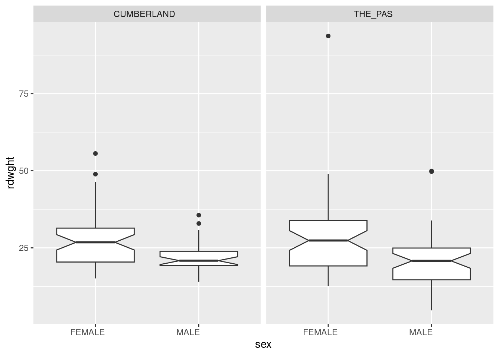
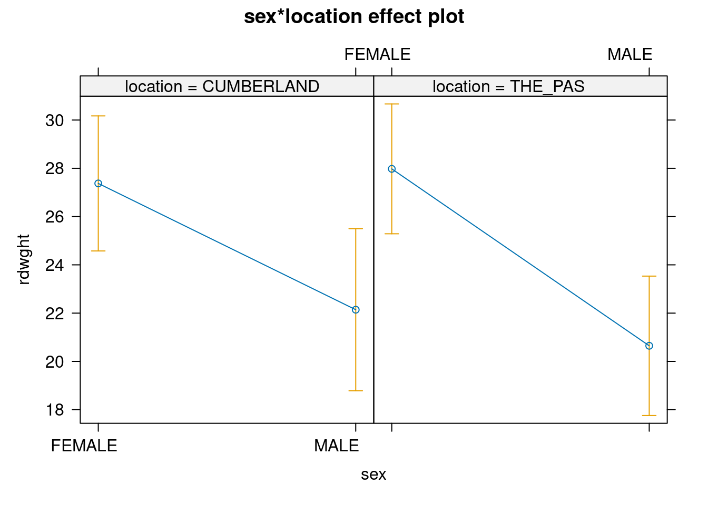
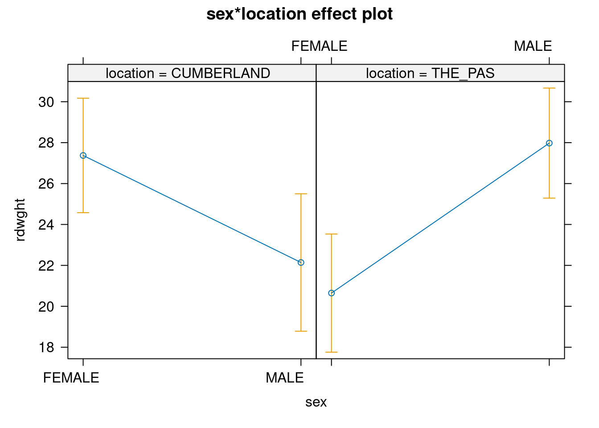
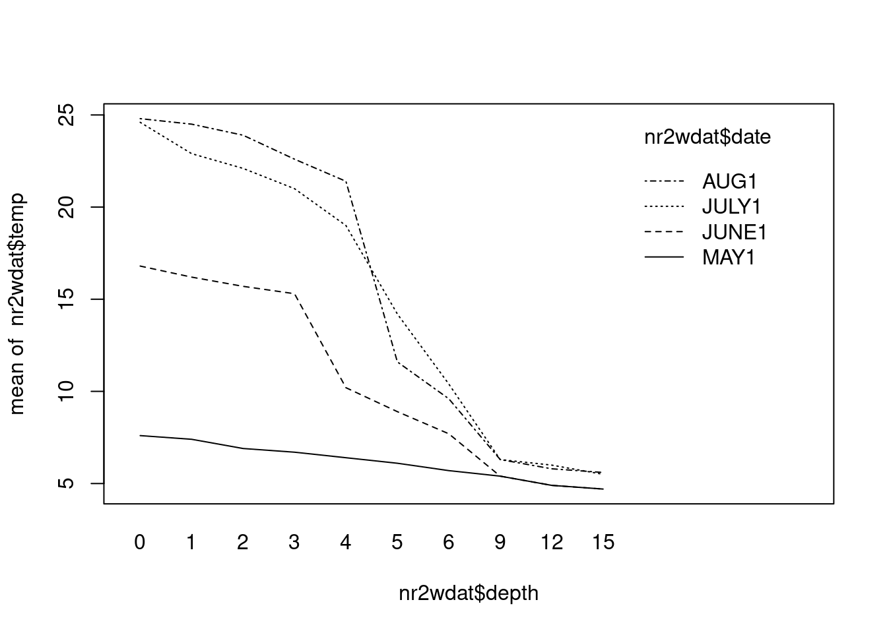
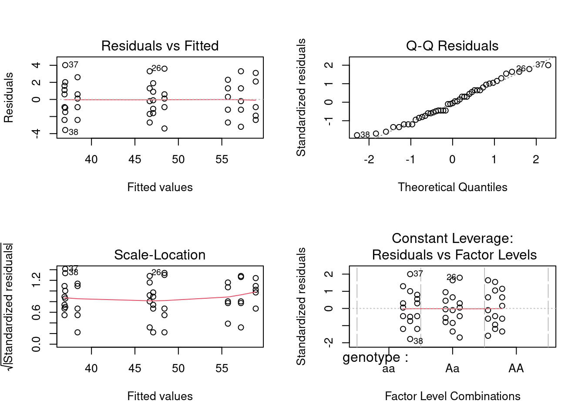
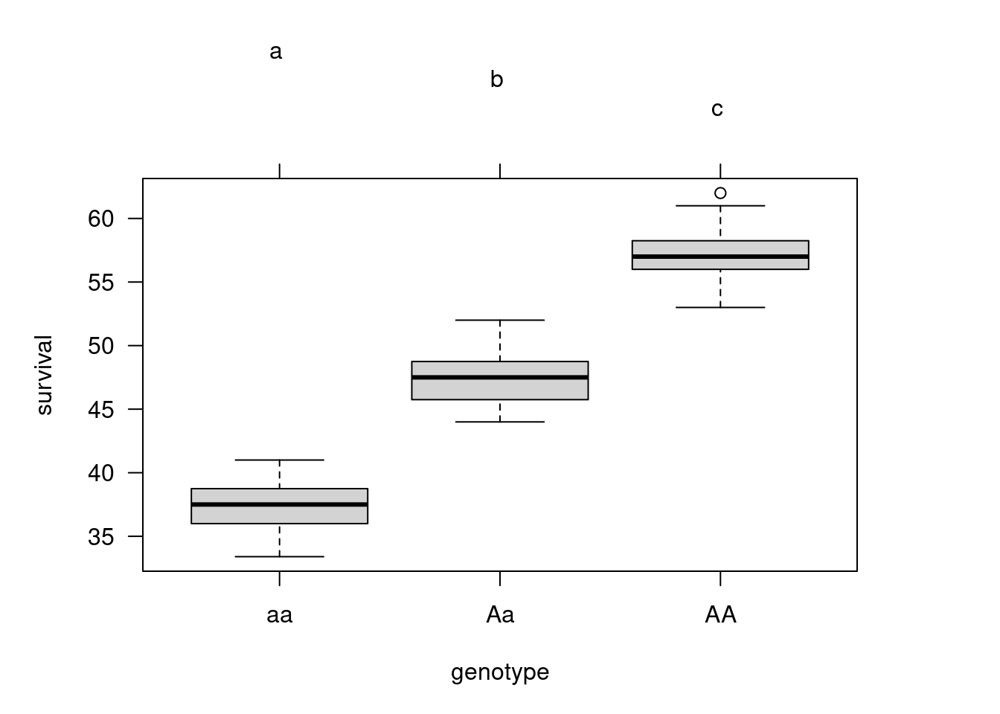
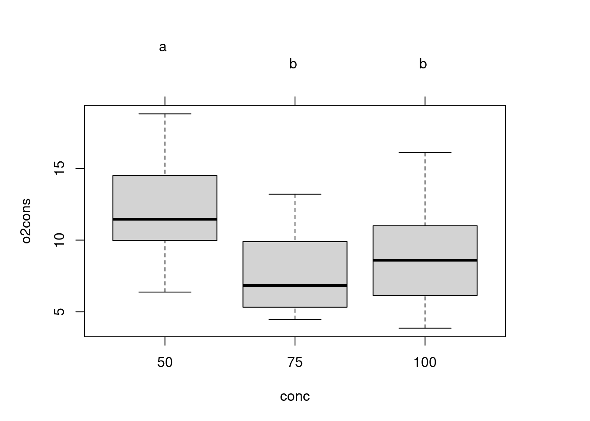
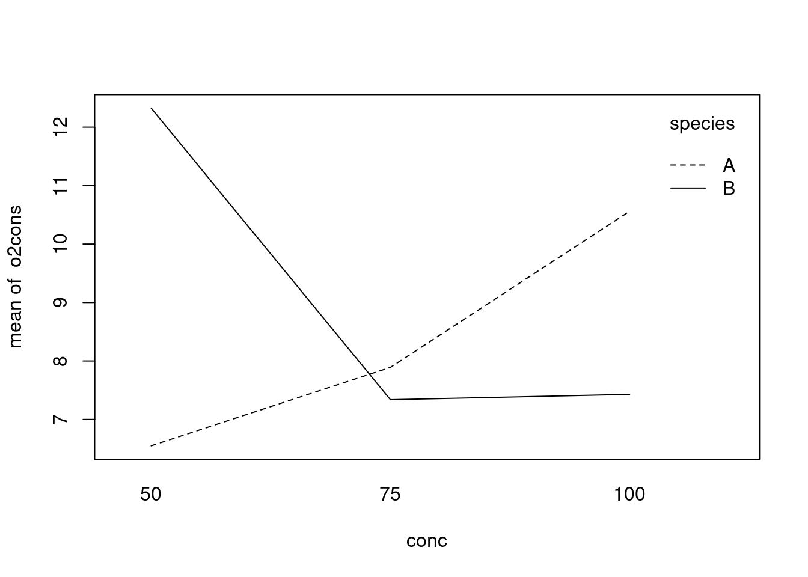
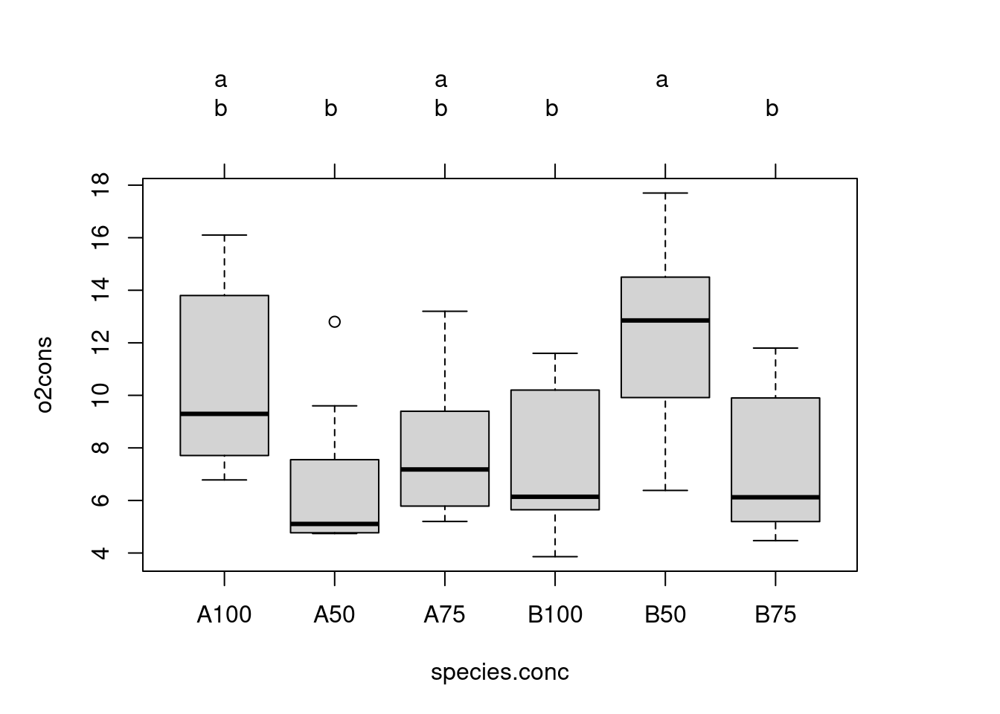

6 Multiway ANOVA: factorial and nested designs
After completing this laboratory exercise, you should be able to:
- Use R to do parametric ANOVAs for 2-way factorial designs with replication.
- Use R to do 2-way factorial design ANOVA without replication
- Use R to do parametric ANOVAs for nested designs with replication.
- Use R to do non-parametric 2-way ANOVAs
- Use R to do multiway pairwise comparisons
Be aware that there are a large number of possible ANOVA designs, many of which can be handled by R: this laboratory is
6.1 R packages and data needed
For this lab you need:
- R packages:
- tidyverse
- multicomp
- car
- effects
- data files:
- Stu2wdat.csv
- Stu2mdat.csv
- nr2wdat.csv
- nestdat.csv
- wmcdat2.csv
- wmc2dat2.csv
6.2 Two-way factorial design with replication
Many experiments are designed to investigate the joint effects of several different factors: in a two-way ANOVA, we examine the effect of two factors, but in principle the analysis can be extended to three, four or even five factors, although interpreting the results from 4- and 5-way ANOVAs can be very difficult.
Suppose that we are interested in the effects of two factors: location (Cumberland House and The Pas) and sex (male or female) on sturgeon size (data can be found in Stu2wdat.csv). Note that because the sample sizes are not the same for each group, this is an unbalanced design. Note also that there are missing data for some of the variables, meaning that not every measurement was made on every fish.
6.2.1 Fixed effects ANOVA (Model I)
- Begin by having a look at the data by generating box plots of
rdwghtforsexandlocationfrom the fileStu2wdat.csv.
Stu2wdat <- read.csv("data/Stu2wdat.csv")
ggplot(Stu2wdat, aes(x = sex, y = rdwght)) +
geom_boxplot(notch = TRUE) +
facet_grid(~location)Warning: Removed 4 rows containing non-finite values (`stat_boxplot()`).
From this, it appears as though females might be larger at both locations. It’s difficult to get an idea of whether fish differ in size between the two locations. The presence of outliers on these plots suggests there might be problems meeting normality assumptions for the residuals.
- Generate summary statistics for rdwght by sex and location .
Stu2wdat <- read.csv("data/Stu2wdat.csv")
aggregate(rdwght ~ sex + location, data = Stu2wdat, FUN = "summary") sex location rdwght.Min. rdwght.1st Qu. rdwght.Median
1 FEMALE CUMBERLAND 15.10000 20.40000 26.80000
2 MALE CUMBERLAND 14.00000 19.22500 20.85000
3 FEMALE THE_PAS 12.54000 19.14000 27.39000
4 MALE THE_PAS 4.73000 14.63000 20.79000
rdwght.Mean rdwght.3rd Qu. rdwght.Max.
1 27.37347 31.40000 55.60000
2 22.14118 23.90000 35.60000
3 27.97717 33.88000 93.72000
4 20.64652 24.94250 49.94000The summary statistics confirm our interpretation of the box plots: females appear to be larger than males, and differences in fish size between locations are small.
- Using the file
Stu2wdat.csv, do a two-way factorial ANOVA:
# Fit anova model and plot residual diagnostics
# but first, save current par and set graphic page to hold 4 graphs
opar <- par(mfrow = c(2, 2))
anova.model1 <- lm(rdwght ~ sex + location + sex:location,
contrasts = list(sex = contr.sum, location = contr.sum),
data = Stu2wdat
)
anova(anova.model1)Analysis of Variance Table
Response: rdwght
Df Sum Sq Mean Sq F value Pr(>F)
sex 1 1839.6 1839.55 18.6785 2.569e-05 ***
location 1 4.3 4.26 0.0433 0.8355
sex:location 1 48.7 48.69 0.4944 0.4829
Residuals 178 17530.4 98.49
---
Signif. codes: 0 '***' 0.001 '**' 0.01 '*' 0.05 '.' 0.1 ' ' 1Be careful here. R gives you the sequential sums of squares (Type I) and associated Mean squares and probabilities. These are not to be trusted unless the design is perfectly balanced. In this case, there are varying numbers of observations across sex and location combinations and therefore the design is not balanced.
What you want are the partial sums of squares (type III). The easiest way to get them is to use the Anova() function in the car 📦 package (note the subtle difference, Anova() is not the same as anova(), remember case matters in R.). However, this is not enough by itself. To get the proper values for the type III sums of square, one also needs to specify contrasts, hence the cryptic contrasts = list(sex = contr.sum,location = contr.sum).
Anova Table (Type III tests)
Response: rdwght
Sum Sq Df F value Pr(>F)
(Intercept) 106507 1 1081.4552 < 2.2e-16 ***
sex 1745 1 17.7220 4.051e-05 ***
location 9 1 0.0891 0.7656
sex:location 49 1 0.4944 0.4829
Residuals 17530 178
---
Signif. codes: 0 '***' 0.001 '**' 0.01 '*' 0.05 '.' 0.1 ' ' 1On the basis of the ANOVA, there is no reason to reject two null hypotheses: (1) that the effect of sex (if any) does not depend on location (no interaction), and (2) that there is no difference in the size of sturgeon (pooled over sex ) between the two locations . On the other hand, we reject the null hypothesis that there is no difference in size between male and female sturgeon (pooled over location ), precisely as expected from the graphs.
As usual, we cannot accept the above results without first ensuring that the assumptions of ANOVA are met. Examination of the residuals plots above shows that the residuals are reasonably normally distributed, with the exception of three potential outliers flagged on the QQ plot (cases 101, 24, & 71; the latter two are on top of one another). However, Cook’s distances are not large for these (the 0.5 contour is not even visible on the plot), so there is little indication that these are a concern.The residuals vs fit plot shows that the spread of residuals is about equal over the range of the fitted values, again with the exception of a few cases. When we test for normality of residuals we get:
shapiro.test(residuals(anova.model1))
Shapiro-Wilk normality test
data: residuals(anova.model1)
W = 0.87213, p-value = 2.619e-11So, there is evidence of non-normality in the residuals.
We will use the Levene’s test to examine the assumption of homogeneity of variances, just as we did with the 1-way anova.
leveneTest(rdwght ~ sex * location, data = Stu2wdat)Levene's Test for Homogeneity of Variance (center = median)
Df F value Pr(>F)
group 3 3.8526 0.01055 *
178
---
Signif. codes: 0 '***' 0.001 '**' 0.01 '*' 0.05 '.' 0.1 ' ' 1If the assumption of homogeneity of variances was valid, we would be accepting the null that the mean of the absolute values of residuals does not vary among levels of sex and location (i.e., group ). The above table shows that the hypothesis is rejected and we conclude there is evidence of heteroscedascticity. All in all, there is some evidence that several important assumptions have been violated. However, whether these violations are sufficiently large to invalidate our conclusions remains to be seen.
Repeat this procedure using the data file Stu2mdat.Rdata . Now what do you conclude? Suppose you wanted to compare the sizes of males and females: in what way would these comparisons differ between Stu2wdat.Rdata and Stu2mdat.Rdata ?
Call:
lm(formula = rdwght ~ sex + location + sex:location, data = Stu2mdat,
contrasts = list(sex = contr.sum, location = contr.sum))
Residuals:
Min 1Q Median 3Q Max
-15.917 -6.017 -0.580 4.445 65.743
Coefficients:
Estimate Std. Error t value Pr(>|t|)
(Intercept) 24.5346 0.7461 32.885 < 2e-16 ***
sex1 -0.5246 0.7461 -0.703 0.483
location1 0.2227 0.7461 0.299 0.766
sex1:location1 3.1407 0.7461 4.210 4.05e-05 ***
---
Signif. codes: 0 '***' 0.001 '**' 0.01 '*' 0.05 '.' 0.1 ' ' 1
Residual standard error: 9.924 on 178 degrees of freedom
(4 observations deleted due to missingness)
Multiple R-squared: 0.09744, Adjusted R-squared: 0.08223
F-statistic: 6.405 on 3 and 178 DF, p-value: 0.0003817Note that in this case, we see that at Cumberland House, females are larger than males, whereas the opposite is true in The Pas (you can confirm this observation by generating summary statistics). What happens with the ANOVA (remember, you want Type III sum of squares)?
Anova Table (Type III tests)
Response: rdwght
Sum Sq Df F value Pr(>F)
(Intercept) 106507 1 1081.4552 < 2.2e-16 ***
sex 49 1 0.4944 0.4829
location 9 1 0.0891 0.7656
sex:location 1745 1 17.7220 4.051e-05 ***
Residuals 17530 178
---
Signif. codes: 0 '***' 0.001 '**' 0.01 '*' 0.05 '.' 0.1 ' ' 1In this case, the interaction term sex:location is significant but the main effects are not significant.
- You might find it useful here to generate plots for the two data files to compare the interactions between
sexandlocation. The effect plot shows the relationship between means for each combination of factors (also called cell means). Generate an effect plot for the two models using theallEffects()command from theeffects📦 package:
library(effects)
allEffects(anova.model1) model: rdwght ~ sex + location + sex:location
sex*location effect
location
sex CUMBERLAND THE_PAS
FEMALE 27.37347 27.97717
MALE 22.14118 20.64652plot(allEffects(anova.model1), "sex:location")
allEffects(anova.model2) model: rdwght ~ sex + location + sex:location
sex*location effect
location
sex CUMBERLAND THE_PAS
FEMALE 27.37347 20.64652
MALE 22.14118 27.97717plot(allEffects(anova.model2), "sex:location")
There is a very large difference between the results from Stu2wdat and Stu2mdat. In the former case, because there is no significant interaction, we can essentially pool over the levels of factor 1 (sex, say) to test for the effects of location , or over the levels of factor 2 (location) to test for the effects of sex . In fact, if we do so and simply run a one-way ANOVA on the Stu2wdat data with sex as the grouping variable, we get:
Anova Table (Type III tests)
Response: rdwght
Sum Sq Df F value Pr(>F)
(Intercept) 78191 1 800.440 < 2.2e-16 ***
sex 1840 1 18.831 2.377e-05 ***
Residuals 17583 180
---
Signif. codes: 0 '***' 0.001 '**' 0.01 '*' 0.05 '.' 0.1 ' ' 1Note that here the residual sum of squares (17583) is only slightly higher than for the 2-way model (17530), simply because, in the 2-way model, only a small fraction of the explained sums of squares is due to the location main effect or the sex:LOCATION interaction. On the other hand, if you try the same trick with stu2mdat, you get:
Anova Table (Type III tests)
Response: rdwght
Sum Sq Df F value Pr(>F)
(Intercept) 55251 1 515.0435 <2e-16 ***
sex 113 1 1.0571 0.3053
Residuals 19309 180
---
Signif. codes: 0 '***' 0.001 '**' 0.01 '*' 0.05 '.' 0.1 ' ' 1Here, the residuals sum of squares (19309) is much larger than in the 2-way model (17530), because most of the explained sums of squares is due to the interaction. Note that if we did this, we would conclude that male and female sturgeons don’t differ in size. But in fact they do: it’s just that the difference is in different directions, depending on location. This is why it is always dangerous to try and make too much of main effects in the presence of interactions!
6.2.2 Mixed effects ANOVA (Model III)
We have neglected an important component in the above analyses, and that is related to the type of ANOVA model we wish to run. In this example, Location could be considered a random effect, whereas sex is a fixed effect (because it is “fixed” biologically), and so this model could be treated as a mixed model (Model III) ANOVA. Note that in these analyses, R treats analyses by default as Model I ANOVA, so that the main effects and the interaction are tested over the residuals mean square. Recall, however, that in a Model III ANOVA, main effects are tested over the interaction mean square or the pooled interaction mean square and residual mean square (depending on which statistician you consult!)
- Working with the
Stu2wdatdata, rebuild the ANOVA table forrdwghtfor the situation in whichlocationis a random factor andsexis a fixed factor. To do this, you need to recalculate the F-ratio for sex using thesex:locationinteraction mean square instead of the residual mean square. This is most easily accomplished by hand, making sure you are working with the Type III Sums of squares ANOVA table.
Anova(anova.model1, type = 3)Anova Table (Type III tests)
Response: rdwght
Sum Sq Df F value Pr(>F)
(Intercept) 106507 1 1081.4552 < 2.2e-16 ***
sex 1745 1 17.7220 4.051e-05 ***
location 9 1 0.0891 0.7656
sex:location 49 1 0.4944 0.4829
Residuals 17530 178
---
Signif. codes: 0 '***' 0.001 '**' 0.01 '*' 0.05 '.' 0.1 ' ' 1For sex, the new ratio of mean squares is
\[F = \frac{(1745/1)}{(49/1)} = 35.6\]
To assign a probability to the new F-value, enter the following in the commands window: pf(F, df1, df2, lower.tail = FALSE) , where F is the newly calculated F-value, and df1 and df2 are the degrees of freedom of the numerator (sex) and denominator (SEX:location), respectively.
pf(35.6, 1, 1, lower.tail = FALSE)[1] 0.1057152Note that the p value for sex is now non-significant. This is because the error MS of the initial ANOVA is smaller than the interaction MS, but mostly because the number of degrees of freedom of the denominator of the F test has dropped from 178 to 1. In general, a drop in the denominator degrees of freedom makes it much more difficult to reach significance.
Mixed model which are a generalisation of mixed-effect ANOVA are now really developped and are to be favoured intead of doing it by hand.
6.3 2-way factorial ANOVA without replication
In some experimental designs, there are no replicates within data cells: perhaps it is simply too expensive to obtain more than one datum per cell. A 2-way ANOVA is still possible under these circumstances, but there is an important limitation.
Because there is no replication within cells, there is no error variance: we have simply a row sum of squares, a column sum of squares, and a remainder sum of squares. This has important implications: if there is an interaction in a Model III ANOVA, only the fixed effect can be tested (over the remainder MS); for Model I ANOVAs, or for random effects in Model III ANOVAs, it is not appropriate to test main effects over the remainder unless we are sure there is no interaction.
A limnologist studying Round Lake in Algonquin Park takes a single temperature ( temp ) reading at 10 different depths ( depth , in m) at four times ( date) over the course of the summer. Her data are shown in Nr2wdat.csv.
- Do a two-way unreplicated ANOVA using temp as the dependent vari able, date and depth as the factor variables (you will need to recode depth to tell R to treat this variable as a factor). Note that there is no interaction term included in this model.
nr2wdat <- read.csv("data/nr2wdat.csv")
nr2wdat$depth <- as.factor(nr2wdat$depth)
anova.model4 <- lm(temp ~ date + depth, data = nr2wdat)
Anova(anova.model4, type = 3)Anova Table (Type III tests)
Response: temp
Sum Sq Df F value Pr(>F)
(Intercept) 1511.99 1 125.5652 1.170e-11 ***
date 591.15 3 16.3641 2.935e-06 ***
depth 1082.82 9 9.9916 1.450e-06 ***
Residuals 325.12 27
---
Signif. codes: 0 '***' 0.001 '**' 0.01 '*' 0.05 '.' 0.1 ' ' 1Assuming that this is a Model III ANOVA ( date random, depth fixed), what do you conclude? (Hint: you may want to generate an interaction plot of temp versus depth and month, just to see what’s going on.)
interaction.plot(nr2wdat$depth, nr2wdat$date, nr2wdat$temp)
There is a highly significant decrease in temperature as depth increases. To test the effect of month (the (assumed) random factor), we must assume that there is no interaction between depth and month, i.e. that the change in temperature with depth is the same for each month. This is a dubious assumption: if you plot temperature against depth for each month, you should see that the temperature profile becomes increasingly non-linear as the summer progresses (i.e. the thermocline develops), from almost a linear decline in early spring to what amounts to a step decline in August. In other words, the relationship between temperature and depth does change with month, so that if you were to use the above fitted model to estimate, say, the temperature at a depth of 5 m in July, you would not get a particularly good estimate.
In terms of residual diagnostics, have a look at the residuals probability plot and residuals vs fitted values plot.
shapiro.test(residuals(anova.model4))
Shapiro-Wilk normality test
data: residuals(anova.model4)
W = 0.95968, p-value = 0.1634Testing the residuals for normality, we get p = 0.16, so that the normality assumption seems to be O.K. In terms of heteroscedasticity, we can only test among months, using depths as replicates (or among depths using months as replicates). Using depths as replicates within months, we find
leveneTest(temp ~ date, data = nr2wdat)Warning in leveneTest.default(y = y, group = group, ...): group coerced to
factor.Levene's Test for Homogeneity of Variance (center = median)
Df F value Pr(>F)
group 3 17.979 2.679e-07 ***
36
---
Signif. codes: 0 '***' 0.001 '**' 0.01 '*' 0.05 '.' 0.1 ' ' 1So there seems to be some problem here, as can be plainly seen in the above plot of residuals vs fit. All in all, this analysis is not very satisfactory: there appears to be some problems with the assumptions, and the assumption of no interaction between depth and date would appear to be invalid.
6.4 Nested designs
A common experimental design occurs when each major group (or treatment) is divided into randomly chosen subgroups. For example, a geneticist interested in the effects of genotype on desiccation resistance in fruit flies might conduct an experiment with larvae of three different genotypes. For each genotype (major group), she sets up three environmental chambers (sub-groups, replicates within groups) with a fixed temperature humidity regime, and in each chamber, she has five larvae for which she records the number of hours each larvae survived.
- The file
Nestdat.csvcontains the results of just such an experi ment. The file lists three variables: genotype , chamber and survival . Run a nested ANOVA with survival as the dependent variable, genotype/chamber as the independent variables (this is the shorthand notation for a chamber effect nested under genotype).
What do you conclude from this analysis? What analysis would (should) you do next? (Hint: if there is a non-significant effect of chambers within genotypes, then you can increase the power of between-genotype comparisons by pooling over chambers within genotypes, although not everyone (Dr. Rundle included) agrees with such pooling.) Do it! Make sure you check your assumptions!
anova(anova.nested)Analysis of Variance Table
Response: survival
Df Sum Sq Mean Sq F value Pr(>F)
genotype 2 2952.22 1476.11 292.6081 <2e-16 ***
genotype:chamber 6 40.65 6.78 1.3432 0.2639
Residuals 36 181.61 5.04
---
Signif. codes: 0 '***' 0.001 '**' 0.01 '*' 0.05 '.' 0.1 ' ' 1
We conclude from this analysis that there is no (significant) variation among chambers within genotypes, but that the null hypothesis that all genotypes have the same dessiccation resistance (as measured by survival) is rejected (Test of genotype using MS genotype:chamber as denominator: F = 1476.11/6.78 = 217.7153, P<0.0001). In other words, genotypes differ in their survival.
Since the chambers within genotypes effect is non-significant, we may want to pool over chambers to increase our degrees of freedom:
Analysis of Variance Table
Response: survival
Df Sum Sq Mean Sq F value Pr(>F)
genotype 2 2952.22 1476.11 278.93 < 2.2e-16 ***
Residuals 42 222.26 5.29
---
Signif. codes: 0 '***' 0.001 '**' 0.01 '*' 0.05 '.' 0.1 ' ' 1Thus, we conclude that there is significant variation among the three genotypes in dessiccation resistance.
A box plot of survival across genotypes shows clearly that there is significant variation among the three genotypes in dessiccation resistance. This can be combined with a formal Tukey multiple comparison test:
par(mfrow = c(1, 1))
# Compute and plot means and Tukey CI
means <- glht(anova.simple, linfct = mcp(
genotype =
"Tukey"
))
cimeans <- cld(means)
# use sufficiently large upper margin
old.par <- par(mai = c(1, 1, 1.25, 1))
# plot
plot(cimeans, las = 1) # las option to put y-axis labels as God intended them
So, we conclude from the Tukey analysis and plot that dessiccation resistance (R) , as measured by larval survival under hot, dry conditions, varies significantly among all three genotypes with R(AA) > R(Aa) > R(aa).
Before concluding this, however, we must test the assumptions. Here are the residual plots and diagnostics for the one-way (unnested) design:
So, all the assumptions appear to be valid, and the conclusion reached above still holds. Note that if you compare the residual mean squares of the nested and one-way ANOVAs (5.04 vs 5.29), they are almost identical. This is not surprising, given the small contribution of the chamber %in% genotype effect to the explained sum of squares.
6.5 Two-way non-parametric ANOVA
Two-way non-parametric ANOVA is an extension of the non-parametric one-way methods discussed previously. The basic procedure is to rank all the data in the sample from smallest to largest, then carry out a 2-way ANOVA on the ranks. This can be done either for replicated or unreplicated data.
Using the data file Stu2wdat.csv , do a two-factor ANOVA to examine the effects of sex and location on rank(rdwght).
The Scheirer-Ray-Hare extension of the Kruskall-Wallis test is done by computing a statistic H given by the effect sums of squares (SS) divided by the total MS. The latter can be calculated as the variance of the ranks. We compute an H statistic for each term. The H-statistics are then compared to a theoretical \(\chi^2\) (chi-square) distribution using the command line: pchisq(H, df, lower.tail = FALSE) , where H and df are the calculated H-statistics and associated degrees of freedom, respectively.
- Use the ANOVA table based on ranks to test the effects of
sexand onrdwght. What do you conclude? How does this result compare with the result obtained with the parametric 2-way ANOVA done before?
Anova(aov.rank, type = 3)Anova Table (Type III tests)
Response: rank(rdwght)
Sum Sq Df F value Pr(>F)
(Intercept) 1499862 1 577.8673 < 2.2e-16 ***
sex 58394 1 22.4979 4.237e-06 ***
location 1128 1 0.4347 0.5105
sex:location 1230 1 0.4738 0.4921
Residuals 472383 182
---
Signif. codes: 0 '***' 0.001 '**' 0.01 '*' 0.05 '.' 0.1 ' ' 1To calculate the Scheirer-Ray-Hare extension to the Kruskall-Wallis test, you must first calculate the total mean square (MS), i.e. the variance of the ranked data. In this case, there are 186 observations, their ranks are therefore the series 1, 2, 3, …, 186. The variance can be calculated simply as var(1:186) (Isn’t R neat? Cryptic maybe, but neat). So we can compute the H statistic for each term:
And convert these statistics into p-values:
# sex
Hsex[1] 20.14628pchisq(Hsex, 1, lower.tail = FALSE)[1] 7.173954e-06# location
Hlocation[1] 0.3891668pchisq(Hlocation, 1, lower.tail = FALSE)[1] 0.5327377# sex:location
Hsexloc[1] 0.4243574pchisq(Hsexloc, 1, lower.tail = FALSE)[1] 0.5147707Note that these results are the same as those obtained in our original two-way parametric ANOVA. Despite the reduced power, we still find significant differences between the sexes, but still no interaction and no effect due to location.
There is, however, an important difference. Recall that in the original parametric ANOVA, there was a significant effect of sex when we considered the problem as a Model I ANOVA. However, if we consider it as Model III, the significant sex effect could in principle disappear, because the df associated with the interaction MS are much smaller than the df associated with the Model I error MS. In this case, however, the interaction MS is about half that of the error MS. So, the significant sex effect becomes even more significant if we analyze the problem as a Model III ANOVA. Once again, we see the importance of specifying the appropriate ANOVA design.
6.6 Multiple comparisons
Further hypothesis testing in multiway ANOVAs depends critically on the outcome of the initial ANOVA. If you are interested in comparing groups of marginal means (that is, means of treatments for one factor pooled over levels of the other factor, e.g., between male and female sturgeon pooled over location), this can be done exactly as outlined for multiple comparisons for one-way ANOVAs. For comparison of individual cell means, you must specify the interaction as the group variable.
The file wmcdat2.csv shows measured oxygen consumption ( o2cons ) of two species ( species = A, B)) of limpets at three different concentrations of seawater ( conc = 100, 75, 50%) taken from Sokal and Rohlf, 1995, p. 332.
- Run a 2-way factorial ANOVA on
wmcdat2data, usingo2consas the dependent variable and species and conc as the factors. What do you conclude?
The ANOVA table is shown below. Technically, because the sample sizes in individual cells are rather small, this analysis should be repeated using a non-parametric ANOVA. For the moment, let’s stick with the parametric analysis.
Anova Table (Type III tests)
Response: o2cons
Sum Sq Df F value Pr(>F)
(Intercept) 1185.60 1 124.0165 4.101e-14 ***
species 0.09 1 0.0097 0.92189
conc 74.90 2 3.9172 0.02755 *
species:conc 23.93 2 1.2514 0.29656
Residuals 401.52 42
---
Signif. codes: 0 '***' 0.001 '**' 0.01 '*' 0.05 '.' 0.1 ' ' 1Look at the diagnostic plots:
Homoscedasticity looks ok, but normality less so.. Testing for normality, we get:
shapiro.test(residuals(anova.model5))
Shapiro-Wilk normality test
data: residuals(anova.model5)
W = 0.93692, p-value = 0.01238So there is evidence of non-normality, but otherwise everything looks O.K. Since the ANOVA is relatively robust with respect to non-normality, we proceed, but if we wanted to reassure ourselves, we could run a non-parametric ANOVA, and get the same answer.
- On the basis of the ANOVA results obtained above, which means would you proceed to compare? Why?
Need to add an explnation here
Overall, we conclude that there are no differences among species, and that the effect of concentration does not depend on species (no interaction). Since there is no interaction and no main effect due to species, the only comparison of interest is among salinity concentrations:
# fit simplified model
anova.model6 <- aov(o2cons ~ conc, data = wmcdat2)
# Make Tukey multiple comparisons
TukeyHSD(anova.model6) Tukey multiple comparisons of means
95% family-wise confidence level
Fit: aov(formula = o2cons ~ conc, data = wmcdat2)
$conc
diff lwr upr p adj
75-50 -4.63625 -7.321998 -1.9505018 0.0003793
100-50 -3.25500 -5.940748 -0.5692518 0.0141313
100-75 1.38125 -1.304498 4.0669982 0.4325855par(mfrow = c(1, 1))
# Graph of all comparisons for conc
tuk <- glht(anova.model6, linfct = mcp(conc = "Tukey"))
# extract information
tuk.cld <- cld(tuk)
# use sufficiently large upper margin
old.par <- par(mai = c(1, 1, 1.25, 1))
# plot
plot(tuk.cld)
par(old.par)So there is evidence of a significant difference in oxygen consumption at a reduction in salinity to 50% of regular seawater, but not at a reduction of only 25%.
- Repeat the analysis described above using
wmc2dat2.csv. How do your results compare with those obtained forwmcdat2.csv?
Using wmc2dat2.csv,we get:
Anova Table (Type III tests)
Response: o2cons
Sum Sq Df F value Pr(>F)
(Intercept) 343.09 1 36.2132 3.745e-07 ***
species 133.52 1 14.0929 0.0005286 ***
conc 66.76 2 3.5232 0.0385011 *
species:conc 168.15 2 8.8742 0.0006101 ***
Residuals 397.91 42
---
Signif. codes: 0 '***' 0.001 '**' 0.01 '*' 0.05 '.' 0.1 ' ' 1Here there is a large interaction effect, and consequently, there is no point in comparing marginal means. This is made clear by examining an interaction plot:
with(wmc2dat2, interaction.plot(conc, species, o2cons))
- Working still with the
wmc2dat2data set, compare individual cell means (6 in all), with the Bonferonni adjustment. To do this, it is helpful to create a new variable to indicate all the combinations ofspeciesandconc:
Then we can conduct pairwise bonferroni comparisons:
with(wmc2dat2, pairwise.t.test(o2cons, species.conc, p.adj = "bonf"))
Pairwise comparisons using t tests with pooled SD
data: o2cons and species.conc
A100 A50 A75 B100 B50
A50 0.1887 - - - -
A75 1.0000 1.0000 - - -
B100 0.7223 1.0000 1.0000 - -
B50 1.0000 0.0079 0.0929 0.0412 -
B75 0.6340 1.0000 1.0000 1.0000 0.0350
P value adjustment method: bonferroni These comparisons are a little more difficult to interpret, but the analysis essentially examines for differences among seawater concentrations within species A and for differences among concentrations within species B. We see here that the o2Cons at 50% seawater for species B is significantly different from that of 75% and 100% seawater for species B, whereas there are no significant differences in o2cons for species A across all seawater concentrations.
I find these outputs rather unsatisfying because they show only p-values, but no indication of effect size. One can get both the conclusion from the multiple comparison procedure and an indication of effect size from the graph produced with the following code:
# fit one-way anova comparing all combinations of species.conc combinations
anova.modelx <- aov(o2cons ~ species.conc, data = wmc2dat2)
tuk2 <- glht(anova.modelx, linfct = mcp(species.conc = "Tukey"))
# extract information
tuk2.cld <- cld(tuk2)
# use sufficiently large upper margin
old.par <- par(mai = c(1, 1, 1.25, 1))
# plot
plot(tuk2.cld)
par(old.par)Note that in this analysis, we have used the error MS = 9.474 from the original model to contrast cell means. Recall, however, that this assumes that in fact we are dealing with a Model I ANOVA, which may or may not be the case ( conc is certainly a fixed factor, but species might be either fixed or random).
6.7 Test de permutation pour l’ANOVA à deux facteurs de classification
When data do not meet the assumptions of the parametric analysis in two- and multiway ANOVA, as an alternative to the non-parametric ANOVA, it is possible to run permutation tests to calculate p-values. The lmPerm package does this easily.
#######################################################################
## lmPerm version of permutation test
library(lmPerm)
# for generality, copy desired dataframe to mydata
# and model formula to myformula
mydata <- Stu2wdat
myformula <- as.formula("rdwght ~ sex+location+sex:location")
# Fit desired model on the desired dataframe
mymodel <- lm(myformula, data = mydata)
# Calculate permutation p-value
anova(lmp(myformula, data = mydata, perm = "Prob", center = FALSE, Ca = 0.001))lmPerm was orphaned for a while and the code below, while clunkier, provided an alternative way of doing it. You would have to adapt it for other situations.
###########################################################
# Permutation test for two way ANOVA
# Ter Braak creates residuals from cell means and then permutes across
# all cells
# This can be accomplished by taking residuals from the full model
# modified from code written by David C. Howell
# http://www.uvm.edu/~dhowell/StatPages/More_Stuff/Permutation%20Anova/PermTestsAnova.html
nreps <- 500
dependent <- Stu2wdat$rdwght
factor1 <- as.factor(Stu2wdat$sex)
factor2 <- as.factor(Stu2wdat$location)
my.dataframe <- data.frame(dependent, factor1, factor2)
my.dataframe.noNA <- my.dataframe[complete.cases(my.dataframe), ]
mod <- lm(dependent ~ factor1 + factor2 + factor1:factor2,
data = my.dataframe.noNA
)
res <- mod$residuals
TBint <- numeric(nreps)
TB1 <- numeric(nreps)
TB2 <- numeric(nreps)
ANOVA <- summary(aov(mod))
cat(
" The standard ANOVA for these data follows ",
"\n"
)
F1 <- ANOVA[[1]]$"F value"[1]
F2 <- ANOVA[[1]]$"F value"[2]
Finteract <- ANOVA[[1]]$"F value"[3]
print(ANOVA)
cat("\n")
cat("\n")
TBint[1] <- Finteract
for (i in 2:nreps) {
newdat <- sample(res, length(res), replace = FALSE)
modb <- summary(aov(newdat ~ factor1 + factor2 +
factor1:factor2,
data = my.dataframe.noNA
))
TBint[i] <- modb[[1]]$"F value"[3]
TB1[i] <- modb[[1]]$"F value"[1]
TB2[i] <- modb[[1]]$"F value"[2]
}
probInt <- length(TBint[TBint >= Finteract]) / nreps
prob1 <- length(TB1[TB1 >= F1]) / nreps
prob2 <- length(TB2[TB1 >= F2]) / nreps
cat("\n")
cat("\n")
print("Resampling as in ter Braak with unrestricted sampling
of cell residuals. ")
cat(
"The probability for the effect of Interaction is ",
probInt, "\n"
)
cat(
"The probability for the effect of Factor 1 is ",
prob1, "\n"
)
cat(
"The probability for the effect of Factor 2 is ",
prob2, "\n"
)6.8 Bootstrap for two-way ANOVA
In most cases, permutation tests will be more appropriate than bootstrap in ANOVA designs. However, for the sake of completedness, I have a snippet of code to do bootstrap for you::
############################################################
###########
# Bootstrap for two-way ANOVA
# You possibly want to edit bootfunction.mod1 to return other values
# Here it returns the standard coefficients of the fitted model
# Requires boot library
#
nreps <- 5000
dependent <- Stu2wdat$rdwght
factor1 <- as.factor(Stu2wdat$sex)
factor2 <- as.factor(Stu2wdat$location)
my.dataframe <- data.frame(dependent, factor1, factor2)
my.dataframe.noNA <- my.dataframe[complete.cases(my.dataframe), ]
library(boot)
# Fit model on observed data
mod1 <- aov(dependent ~ factor1 + factor2 + factor1:factor2,
data = my.dataframe.noNA
)
# Bootstrap 1000 time using the residuals bootstraping methods to
# keep the same unequal number of observations for each level of the indep. var.
fit <- fitted(mod1)
e <- residuals(mod1)
X <- model.matrix(mod1)
bootfunction.mod1 <- function(data, indices) {
y <- fit + e[indices]
bootmod <- lm(y ~ X)
coefficients(bootmod)
}
bootresults <- boot(my.dataframe.noNA, bootfunction.mod1,
R = 1000
)
bootresults
## Calculate 90% CI and plot bootstrap estimates separately for each model parameter
boot.ci(bootresults, conf = 0.9, index = 1)
plot(bootresults, index = 1)
boot.ci(bootresults, conf = 0.9, index = 3)
plot(bootresults, index = 3)
boot.ci(bootresults, conf = 0.9, index = 4)
plot(bootresults, index = 4)
boot.ci(bootresults, conf = 0.9, index = 5)
plot(bootresults, index = 5)